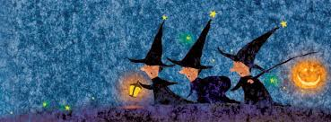

Halloween là gì? Những câu chuyện thú vị xung quanh ngày lễ Halloween
Ngày hội Halloween được bắt nguồn từ dân tộc Celt sống ở Ireland, Anh Quốc, Pháp...Halloween có tên gốc là All Hallows’ Evening là một lễ hội truyền thống diễn ra ngày 31-10, đêm trước ngày lễ các thánh của đạo Kitô giáo latinh. Trong đó “Hallow” là từ tiếng Anh cổ có nghĩa là “thánh” sau này đổi là Halloween. Ngày nay, lễ hội Halloween không còn mang ý nghĩa tôn giáo mà mọi người đều coi đó là một lễ hội vui chơi.
-
Theo người Ireland kể rằng, có một anh chàng tên Jack, anh ta vốn là người ích kỷ, chiêu trò, tham lam và keo kiệt. Một hôm, có con quỷ đến quấy phá một vùng dân cư, nên các vị tu sĩ đem các vật thánh đến "yểm" và "khóa các cửa" ra vào. Thế là con quỷ bị bắt... Jack đã nhận ra đó là con quỷ thường vui đùa với mình và anh đã tìm cách gỡ vật "yểm ma quỷ" mở đường cho quỷ chạy thoát. Để đền ơn cứu mạng, quỷ hứa với Jack là sẽ không bắt hồn Jack về Địa Ngục. Cho nên khi Jack chết thật quỷ đã không cho vào địa ngục vì lời hứa lúc trước.

Sau này, lúc Jack chết, anh không thể lên thiên đàng vì những sự ích kỉ và thói xấu của mình khi còn sống nhưng cũng không thể xuống địa ngục vì lời hứa năm nào với quỷ khi anh cứu mạng nó.
-
Từ câu chuyện của Jack người đời đã rút ra được hai bài học quý giá về tính giáo dục và tính nhân văn. Về tính giáo dục, dựa vào cuộc đời của Jack chúng ta không nên sống mà chỉ biết bản thân mình, đừng nên keo kiệt, cũng đừng lừa lọc bất kỳ ai và cũng đừng quá tham lam mà hãy có lòng thương người, giúp đỡ người khác. Tuy nhiên, cũng công nhận thái độ sòng phẳng của con quỷ khi biết giữ lời hứa.
Về tính nhân văn, mặc dù Jack chỉ là một nhân vật tưởng tượng và không có thật nhưng cậu là một đại diện điển hình đã thực sự hiện thân trong cuộc đời, mà lại là một người cô đơn. Vì vậy, khi biến thành cô hồn, vất vưởng nên những người dân Châu Âu đã dành cho Jack một ngày, một ngày lại được trở về với cõi dương, được vui chơi thoải mái, vì vậy những người sống đã hóa trang thành ma quỷ để linh hồn Jack có chỗ trà trộn vào cho đỡ cô đơn. Đây là ý nghĩa nhân văn của lễ hội Halloween, tuy vậy, ở đây ít người để ý đến ý nghĩa của chúng.
Vì sao bí ngô là biểu tượng của ngày lễ Halloween?
Khi Jack qua đời, cả địa ngục lẫn thiên đàng không nơi nào chịu cho hắn đến, vì vậy Jack đã trở thành một linh hồn lang thang khắp nơi trần thế. Con quỷ được Jack cứu thoát thấy vậy bèn lấy một ít than hồng ở Địa Ngục bỏ vào trong ruột một quả bí ngô và đưa cho Jack để sưởi ấm. Sau này, người Ireland nhập cư vào Mỹ họ đã biến tấu chiếc đèn bí ngô thành đèn lồng Jack-O-Lantern với những khuôn mặt kỳ dị, rùng rợn có phần khác lạ được thắp sáng nhờ cây đèn cầy được bỏ trong quả bí. Chiếc đèn lồng được làm từ bí ngô từ đó được coi là biểu tượng của ngày lễ Halloween.
Những quả bí ngô là thứ nhất định không thể thiếu, chúng được trồng trong các trang trại, để mọi người tới chọn lựa và mang về nhà mình nhằm mục đích hóa trang cho buổi lễ trở nên ma mị hấp dẫn. Thế nhưng, một vài nơi ở Anh mọi người thường biến những quả củ cải trắng thay vì bí ngô làm lồng đèn Halloween.